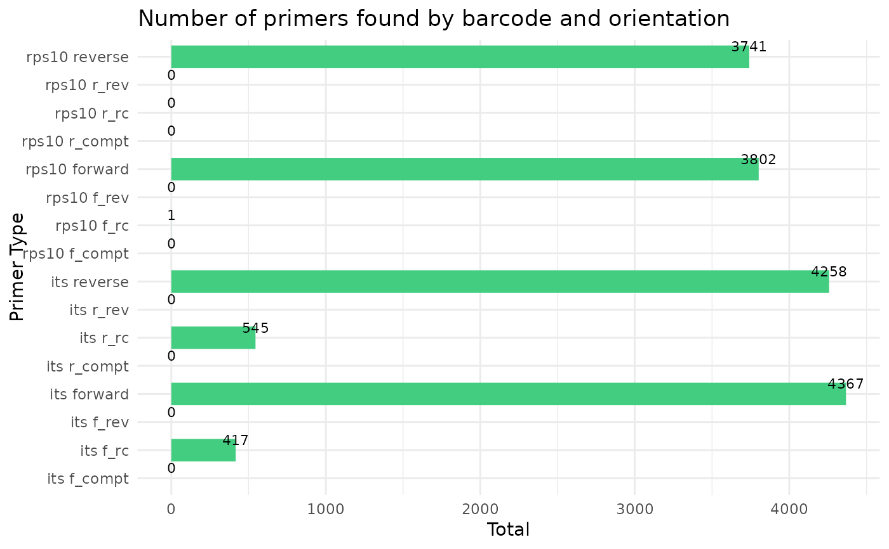
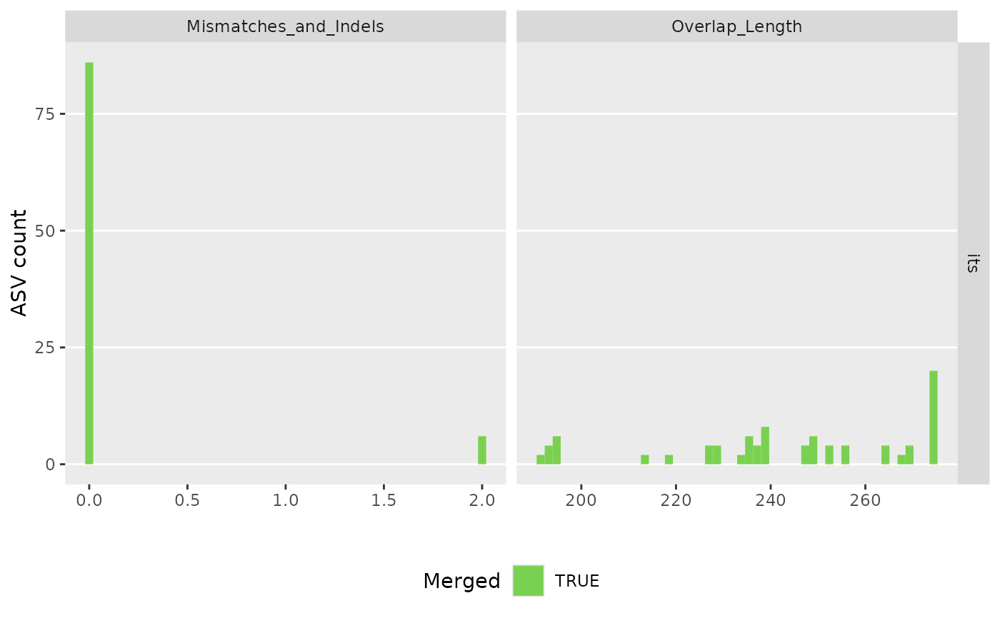
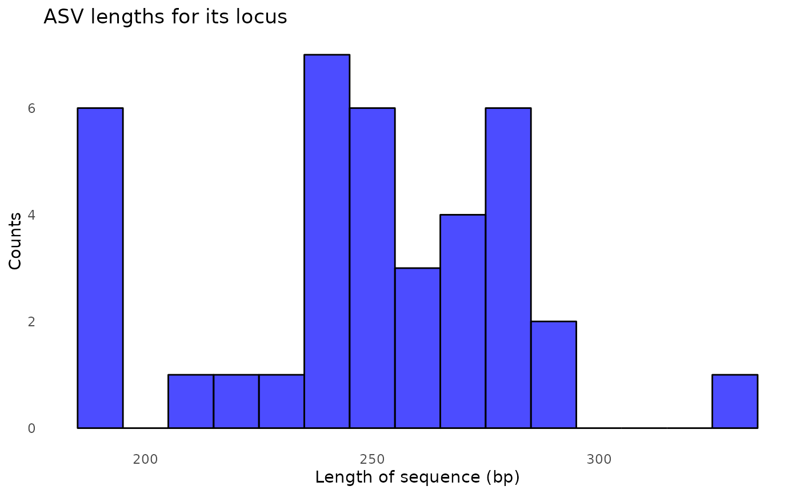
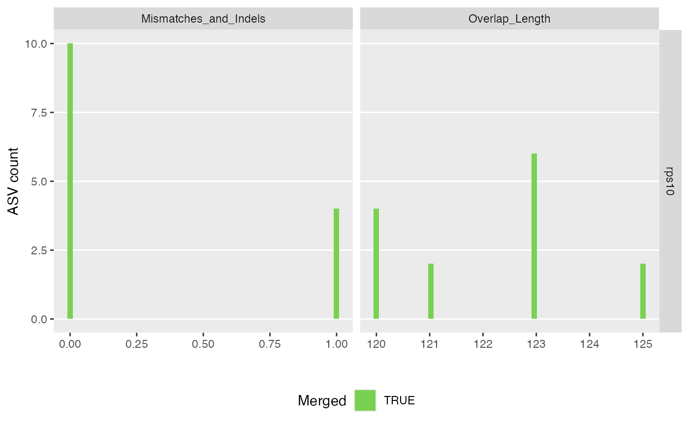
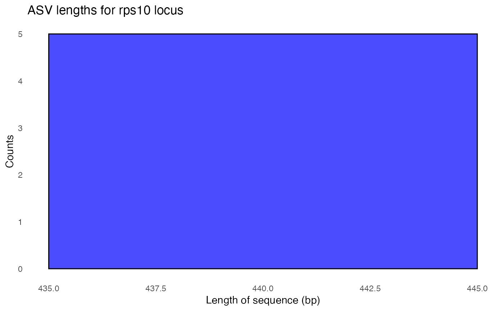

Make an amplified sequence variant (ASV) abundance matrix for each of the input barcodes
Source:R/make_asv_abund_matrix.R
make_asv_abund_matrix.RdMake an amplified sequence variant (ASV) abundance matrix for each of the input barcodes
Details
The function processes data for each unique barcode separately, inferring ASVs, merging reads, and creating an ASV abundance matrix. To do this, the DADA2 core denoising alogrithm is used to infer ASVs.
Examples
# The primary wrapper function for DADA2 ASV inference steps
analysis_setup <- prepare_reads(
data_directory = system.file("extdata", package = "demulticoder"),
output_directory = tempdir(),
tempdir_path = tempdir(),
tempdir_id = "demulticoder_run_temp",
overwrite_existing = TRUE
)
#> Rows: 2 Columns: 23
#> ── Column specification ────────────────────────────────────────────────────────
#> Delimiter: ","
#> chr (3): primer_name, forward, reverse
#> dbl (16): minCutadaptlength, maxN, maxEE_forward, maxEE_reverse, truncLen_fo...
#> lgl (4): already_trimmed, count_all_samples, multithread, verbose
#>
#> ℹ Use `spec()` to retrieve the full column specification for this data.
#> ℹ Specify the column types or set `show_col_types = FALSE` to quiet this message.
#> Rows: 2 Columns: 23
#> ── Column specification ────────────────────────────────────────────────────────
#> Delimiter: ","
#> chr (3): primer_name, forward, reverse
#> dbl (16): minCutadaptlength, maxN, maxEE_forward, maxEE_reverse, truncLen_fo...
#> lgl (4): already_trimmed, count_all_samples, multithread, verbose
#>
#> ℹ Use `spec()` to retrieve the full column specification for this data.
#> ℹ Specify the column types or set `show_col_types = FALSE` to quiet this message.
#> Rows: 4 Columns: 3
#> ── Column specification ────────────────────────────────────────────────────────
#> Delimiter: ","
#> chr (3): sample_name, primer_name, organism
#>
#> ℹ Use `spec()` to retrieve the full column specification for this data.
#> ℹ Specify the column types or set `show_col_types = FALSE` to quiet this message.
#> Creating output directory: /var/folders/59/9jp4sjjd00n2wp4kgqtvq7dh0000gn/T//RtmpZA9S3T/demulticoder_run_temp/prefiltered_sequences

cut_trim(
analysis_setup,
cutadapt_path="/opt/homebrew/bin/cutadapt",
overwrite_existing = TRUE
)
#> Running Cutadapt 4.1 for its sequence data
#> Read in 2564 paired-sequences, output 1479 (57.7%) filtered paired-sequences.
#> Read in 1996 paired-sequences, output 1215 (60.9%) filtered paired-sequences.
#> Running Cutadapt 4.1 for rps10 sequence data
#> Read in 1830 paired-sequences, output 1429 (78.1%) filtered paired-sequences.
#> Read in 2090 paired-sequences, output 1506 (72.1%) filtered paired-sequences.

make_asv_abund_matrix(
analysis_setup,
overwrite_existing = TRUE
)
#> 710847 total bases in 2694 reads from 2 samples will be used for learning the error rates.
#> Initializing error rates to maximum possible estimate.
#> selfConsist step 1 ..
#> selfConsist step 2
#> selfConsist step 3
#> Convergence after 3 rounds.
#> Error rate plot for the Forward read of primer pair its
#> Warning: log-10 transformation introduced infinite values.
#> Sample 1 - 1479 reads in 654 unique sequences.
#> Sample 2 - 1215 reads in 610 unique sequences.
#> 724232 total bases in 2694 reads from 2 samples will be used for learning the error rates.
#> Initializing error rates to maximum possible estimate.
#> selfConsist step 1 ..
#> selfConsist step 2
#> selfConsist step 3
#> Convergence after 3 rounds.
#> Error rate plot for the Reverse read of primer pair its
#> Warning: log-10 transformation introduced infinite values.
#> Sample 1 - 1479 reads in 1019 unique sequences.
#> Sample 2 - 1215 reads in 814 unique sequences.
#> 1315 paired-reads (in 21 unique pairings) successfully merged out of 1416 (in 32 pairings) input.
#> Duplicate sequences in merged output.
#> 1063 paired-reads (in 25 unique pairings) successfully merged out of 1108 (in 28 pairings) input.

#> Duplicate sequences detected and merged.
#> Identified 0 bimeras out of 38 input sequences.
#> 824778 total bases in 2935 reads from 2 samples will be used for learning the error rates.
#> Initializing error rates to maximum possible estimate.
#> selfConsist step 1 ..
#> selfConsist step 2
#> Convergence after 2 rounds.
#> Error rate plot for the Forward read of primer pair rps10
#> Warning: log-10 transformation introduced infinite values.
#> Sample 1 - 1429 reads in 933 unique sequences.
#> Sample 2 - 1506 reads in 1018 unique sequences.
#> 821853 total bases in 2935 reads from 2 samples will be used for learning the error rates.
#> Initializing error rates to maximum possible estimate.
#> selfConsist step 1 ..
#> selfConsist step 2
#> selfConsist step 3
#> Convergence after 3 rounds.
#> Error rate plot for the Reverse read of primer pair rps10
#> Warning: log-10 transformation introduced infinite values.

#> Sample 1 - 1429 reads in 1044 unique sequences.
#> Sample 2 - 1506 reads in 1284 unique sequences.
#> 1420 paired-reads (in 2 unique pairings) successfully merged out of 1422 (in 4 pairings) input.
#> 1503 paired-reads (in 5 unique pairings) successfully merged out of 1504 (in 6 pairings) input.

#> Identified 0 bimeras out of 5 input sequences.

#> $its
#> [1] "/var/folders/59/9jp4sjjd00n2wp4kgqtvq7dh0000gn/T//RtmpZA9S3T/demulticoder_run_temp/asvabund_matrixDADA2_its.RData"
#>
#> $rps10
#> [1] "/var/folders/59/9jp4sjjd00n2wp4kgqtvq7dh0000gn/T//RtmpZA9S3T/demulticoder_run_temp/asvabund_matrixDADA2_rps10.RData"
#>